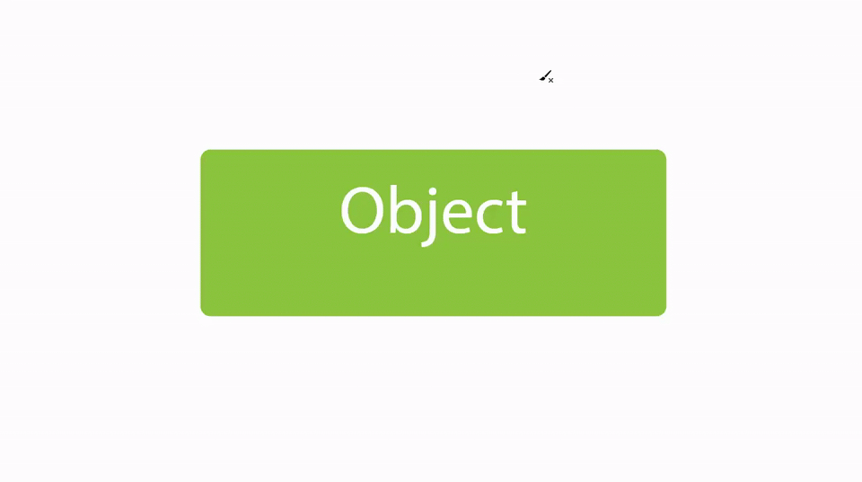

Welcome to the evaluation study for the Neon Trail Brush, an improved pointing interaction technique designed to enhance selection accuracy and efficiency. Unlike traditional clicking or standard crossing-based selection, this method introduces a brush-like cursor with a glowing trail, making it easier to select multiple targets with smooth, natural movement. The study will take approximately 10-15 minutes to complete.
During this study, you will use the Neon Trail Brush to interact with on-screen targets. Instead of clicking, you will sweep the brush across targets, with selections confirmed based on movement patterns and brief pauses. The brush’s glowing trail provides real-time feedback, ensuring clear visibility of selected items.
An example of how this selection tool behaves is given below in order to get you more familiar with the technique. There will then be an actual page where you can randomly generate 'targets' and use the brush to select all, some, or none of these objects. We will measure selection speed, accuracy, and efficiency to compare how this method performs against traditional pointing techniques.
